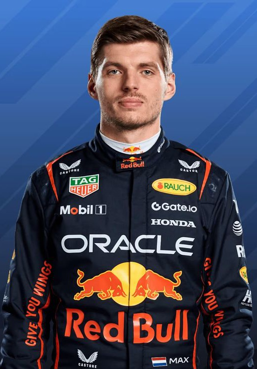
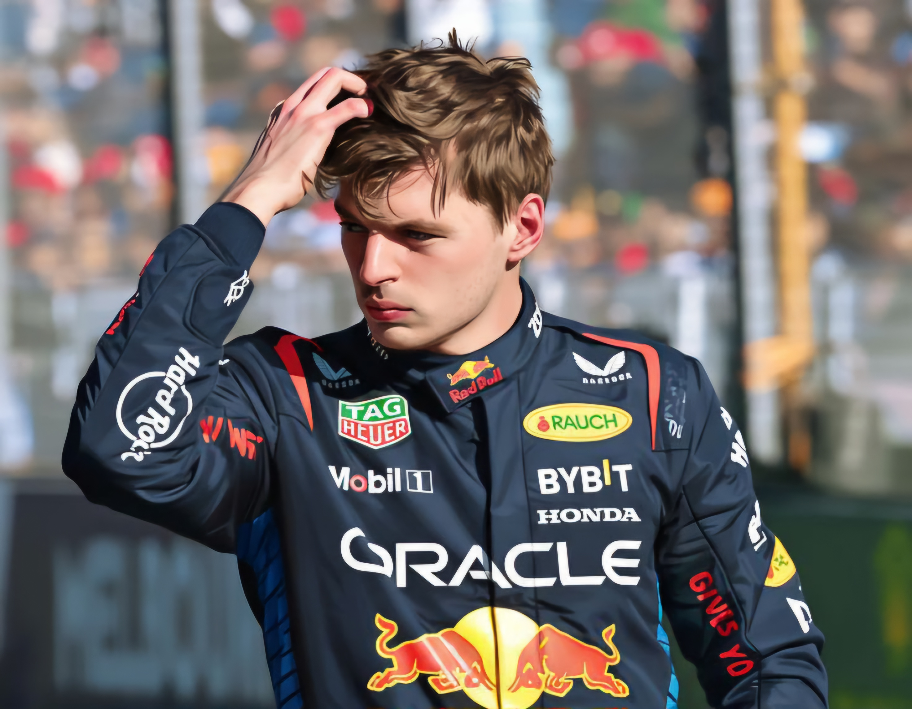

Max Verstappen
"Mad Max"

Полное имя:Макс Эмилиан Ферстаппен
Дата рождения:30.09.1997
Гражданство:Нидерланды
Команда:Red Bull Racing
Номер машины: 1
Прозвище:"Mad Max"
Главные Достижения
- Трехкратный чемпион мира (2021, 2022, 2023)
- Самый молодой дебютант в истории Формулы-1 (17 лет и 166 дней)
- Самый молодой победитель Гран-при (Испания 2016, 18 лет и 228 дней)
- Рекордсмен по количеству побед за один сезон (19 побед в 2023 году)
Биография
Отец,Йос Ферстаппен также был пилотом F1
Мать,Софи Кумпен,выступала в картинге
Путь к Успеху: Макс пропустил молодежные серии вроде F2, перейдя в Формулу-1 практически сразу из картинга и европейской Формулы-3, что заставило FIA изменить правила выдачи суперлицензий (теперь нельзя дебютировать до 18 лет)
Стиль вождения: Агрессивный, бескомпромиссный и невероятно стабильный в любых погодных условиях
Знаковые моменты
Гран-при Испании 2016: Первая же гонка за Red Bull — и сразу победа.

Гран-при Абу-Даби 2021: Легендарный и скандальный последний круг, принесший первый титул в борьбе с Льюисом Хэмилтоном.

Доминирование 2023: Сезон, в котором Макс переписал почти все рекорды эффективности в истории спорта.
